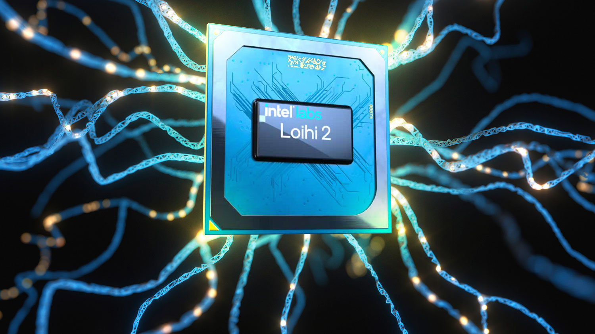
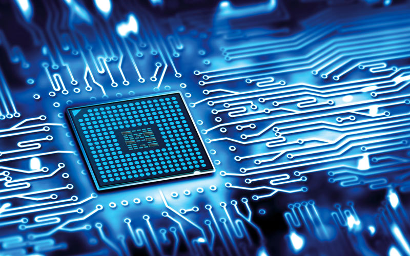
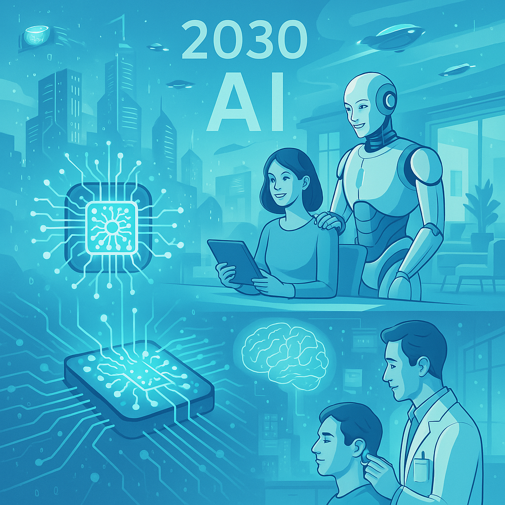

ثورة في الحوسبة شرائح تُحاكي العقل البشري! 🤖🧠
اكتشف كيف تُغير هندسة العقل الاصطناعي مستقبل التكنولوجيا من خلال محاكاة الدماغ البشري 🌐🔬
الأساس العلمي
مقدمة عن الدماغ البشري 🧠
الدماغ البشري هو العضو المسؤول عن التحكم في جميع وظائف الجسم، بما في ذلك التفكير، والذاكرة، والحركة. يتكون الدماغ من مليارات الخلايا العصبية التي تتواصل فيما بينها عبر إشارات كهربائية وكيميائية. هذه الخلايا العصبية تقوم بمعالجة وتخزين المعلومات، وهي تشكل أساس عمل الدماغ في التفكير واتخاذ القرارات.
محاكاة الخلايا العصبية 🤖🧠
في هندسة العقل الاصطناعي، يتم تصميم شرائح عصبية اصطناعية تُحاكي الخلايا العصبية في الدماغ البشري. هذه الشرائح تمثل عصبونات اصطناعية تتفاعل مع البيانات بشكل مشابه لما تفعله الخلايا العصبية البشرية. تعمل هذه العصبونات على معالجة المعلومات بشكل متوازي بدلاً من التسلسل التقليدي، مما يسمح بتسريع العمليات الحسابية بشكل كبير.
التقنيات المستخدمة ⚙️
تستخدم بعض التقنيات الحديثة مثل شريحة إنتل لوهي 2 وآي بي إم ترو نورث لتقليد الدماغ البشري. هذه الشرائح تحتوي على ملايين العصبونات الاصطناعية التي تعمل على محاكاة الأنماط العصبية في الدماغ. شريحة إنتل لوهي 2، على سبيل المثال، تحتوي على مليون عصبون اصطناعي و128 نواة معالجة. بينما آي بي إم ترو نورث تعتمد على تقنيات منخفضة الاستهلاك للطاقة مع 5.4 مليار ترانزستور.
الذكاء الاصطناعي والعقل البشري 🤖🧠
تعتبر شرائح الدماغ الاصطناعي حجر الزاوية في مجال الذكاء الاصطناعي. من خلال محاكاة عمليات الدماغ البشري، يمكن لهذه الشرائح "التعلم" وتحسين الأداء بمرور الوقت، مشابهةً لما يحدث في الدماغ البشري عند التعلم. مثلاً، تستخدم تطبيقات الذكاء الاصطناعي مثل التعلم العميق لتطوير نماذج قادرة على التعرف على الأنماط وتحليل البيانات مثلما يفعل الدماغ البشري.
التقنيات الحديثة
إنتل لوهي 2

1 مليون عصبون اصطناعي
128 نواة معالجة
🌐 تمثل هذه الشريحة ثورة في الذكاء الاصطناعي من خلال محاكاة الخلايا العصبية البيولوجية بكفاءة عالية.
آي بي إم ترو نورث

5.4 مليار ترانزستور
استهلاك طاقة منخفض جداً
🧠 تحاكي هذه الشريحة نمط عمل الدماغ في معالجة البيانات، وتستهلك طاقة أقل بكثير من المعالجات التقليدية.
التطبيقات الثورية
الروبوتات الذكية
تعلم الحركة والمهارات بشكل ذاتي
التشخيص الطبي
تحليل إشارات الدماغ لاكتشاف الأمراض
التحديات
🛠️ التحديات التقنية
- صعوبة محاكاة اللدونة المشبكية في الدماغ
- مشاكل التوصيل الحراري في الشرائح الكثيفة
- تعقيد التصنيع على نطاق واسع
⚖️ المخاوف الأخلاقية
- إمكانية تطوير وعي ذاتي
- استخدام التكنولوجيا في تطبيقات عسكرية
- مسألة التحكم في الأجهزة ذاتية التعلم
رؤية المستقبل

🔮 توقعات عام 2030
- هواتف تعمل بشرائح عصبية تتعلم عادات المستخدم لحظيًا.
- أنظمة طبية قابلة للزرع تعالج اضطرابات الدماغ مثل الزهايمر والاكتئاب.
- روبوتات منزلية ذكية تتطور مع الوقت وتتكيف مع بيئة المستخدم.
🌍 العالم يتجه نحو عصر جديد يُدمج فيه الذكاء الاصطناعي العصبي مع حياتنا اليومية، ليشكل شريكًا معرفيًا يساهم في تسهيل المهام، تحسين الصحة، ودعم القرارات. المستقبل ليس بعيدًا، بل نحن نصنعه اليوم.